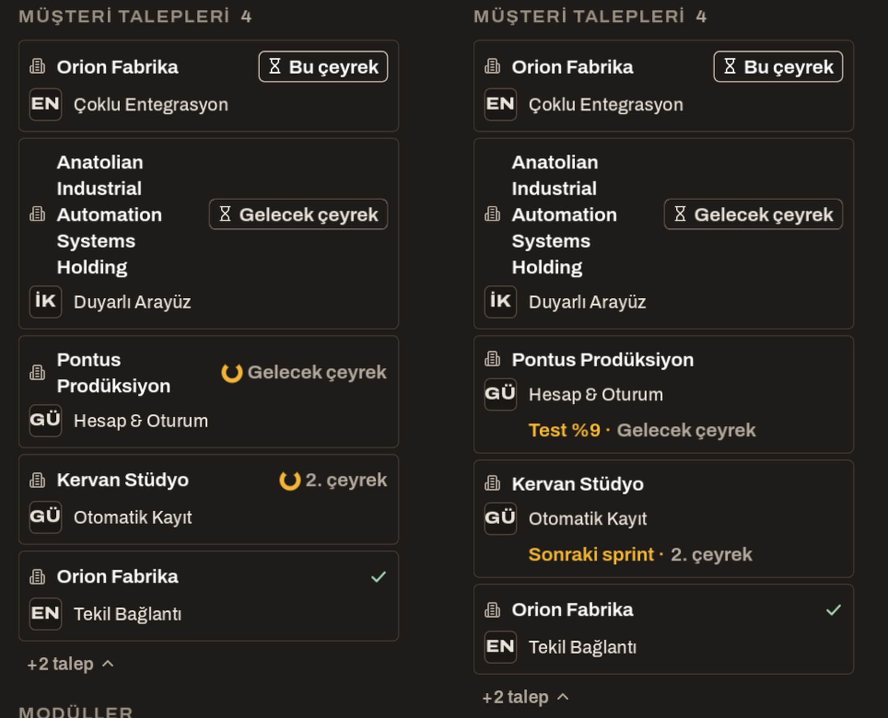
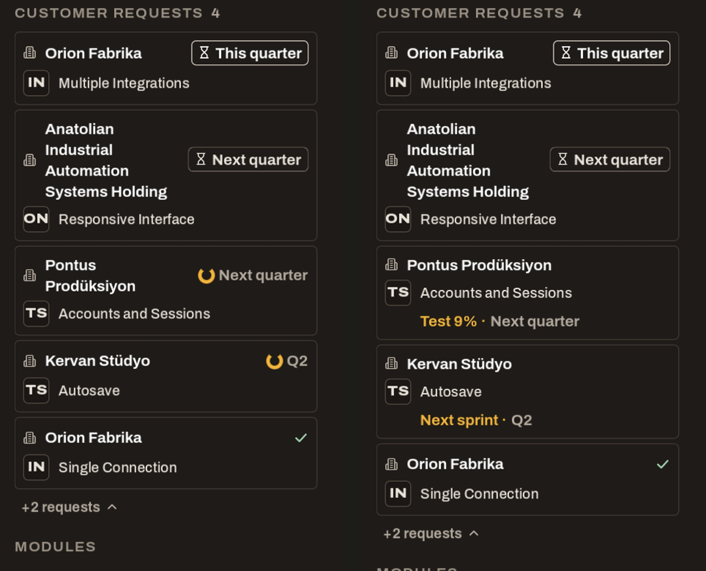
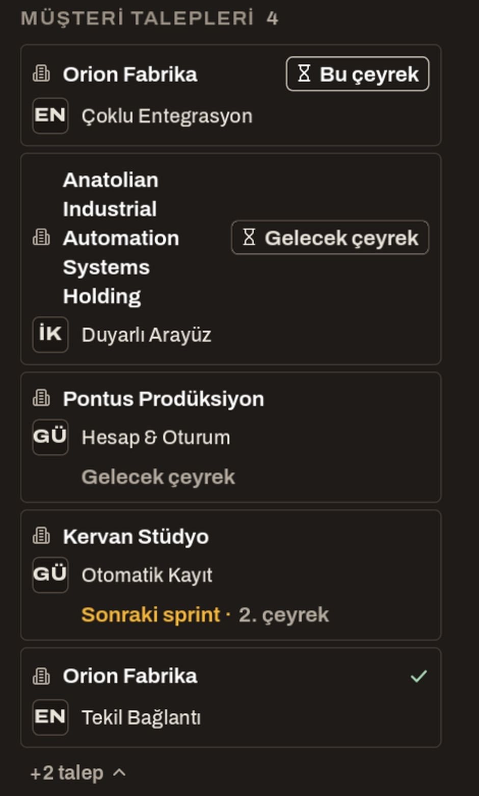

<title>Plandaki İstek Biçimi</title>
<meta name="claude:viewport-fit-sides" content="cover">
<link rel="preconnect" href="https://fonts.googleapis.com">
<link rel="stylesheet" href="https://fonts.googleapis.com/css2?family=Barlow+Condensed:wght@500;600;700&family=IBM+Plex+Sans:wght@400;500;600&family=IBM+Plex+Mono:wght@400;500&display=swap">
<style>
/* Layout: tek okuma şeridi; üstte iki biçimin karesi yan yana, altında numaralı kararlar. Konuşulacaklar sayfasının dili. */
:root{
  --bg:#f3efe7; --surface:#fbf8f2; --ink:#26221c; --muted:#6d6457; --line:#d9d0c1;
  --accent:#b8761c; --good:#3d7a4a; --info:#3f6f8f;
  --f-display:"Barlow Condensed","Arial Narrow",sans-serif;
  --f-body:"IBM Plex Sans",system-ui,sans-serif;
  --f-mono:"IBM Plex Mono",ui-monospace,monospace;
  color-scheme:light;
}
@media (prefers-color-scheme:dark){:root:not([data-theme="light"]){
  --bg:#1c1915; --surface:#25211c; --ink:#ece5d8; --muted:#a59a89; --line:#3b352d;
  --accent:#e0a03e; --good:#7cbf87; --info:#7fb2d4; color-scheme:dark}}
:root[data-theme="dark"]{
  --bg:#1c1915; --surface:#25211c; --ink:#ece5d8; --muted:#a59a89; --line:#3b352d;
  --accent:#e0a03e; --good:#7cbf87; --info:#7fb2d4; color-scheme:dark}
body{background:var(--bg);color:var(--ink);font:15px/1.6 var(--f-body);
  padding-left:max(16px,env(safe-area-inset-left,0px));padding-right:max(16px,env(safe-area-inset-right,0px));padding-block:32px 64px}
main{max-width:960px;margin:0 auto;display:flex;flex-direction:column;gap:36px}
h1,h2{font-family:var(--f-display);font-weight:600;line-height:1.1;text-wrap:balance;margin:0}
h1{font-size:42px} h2{font-size:26px}
p{margin:0;max-width:72ch}
section{display:flex;flex-direction:column;gap:12px}
.eyebrow{font:500 12px/1 var(--f-mono);letter-spacing:.12em;text-transform:uppercase;color:var(--accent)}
.note{font-size:13px;color:var(--muted)}
.box{background:var(--surface);border:1px solid var(--line);border-radius:6px;padding:16px 18px}
.legend{display:grid;grid-template-columns:repeat(2,minmax(0,1fr));gap:12px;font-size:14px}
.legend b{font-family:var(--f-mono);font-weight:500;font-size:12px;letter-spacing:.08em;text-transform:uppercase;color:var(--muted);display:block}
figure{margin:0;display:flex;flex-direction:column;gap:8px}
figure img{width:100%;max-width:100%;height:auto;border-radius:6px;border:1px solid var(--line);display:block}
figcaption{font-size:13px;color:var(--muted)}
.q{display:flex;flex-direction:column;gap:14px;counter-reset:q;list-style:none;padding:0;margin:0}
.q > li{counter-increment:q;display:grid;grid-template-columns:34px minmax(0,1fr);gap:10px}
.q > li::before{content:counter(q);font:600 24px/1 var(--f-display);color:var(--accent);text-align:right}
.q .rec{display:block;margin-top:4px;font-size:14px}
.q .rec b{color:var(--accent)}
.done{border-left:3px solid var(--good)}
.done ul{margin:0;padding-left:20px;display:flex;flex-direction:column;gap:6px}
.late{display:grid;grid-template-columns:minmax(0,320px) minmax(0,1fr);gap:16px;align-items:start}
@media (max-width:640px){.legend,.late{grid-template-columns:minmax(0,1fr)} h1{font-size:34px}}
</style>

<main>
<header style="display:flex;flex-direction:column;gap:12px">
  <span class="eyebrow">Sprint ekranı · sol sütun · 28 Ekim 2026</span>
  <h1>Plandaki istek nasıl görünsün?</h1>
  <p>Kararın: yeşil tik yalnız karşılanmış istekte görünür, plandaki istek "sürüyor" gibi okunur, satır soluk çizilmez. Ürün oturumu iki biçimi oyunun içinde, koşan bir sprintte çekti. Kareler oyunun kendisi; kod henüz değişmedi.</p>
</header>

<section>
  <div class="legend box">
    <div><b>Sol · Biçim 1</b>Plandaki isteğin yanında vurgu renginde bir halka ve tarih.</div>
    <div><b>Sağ · Biçim 2</b>İsteğin altında kartın kendi durumu: "Test %9" ya da "Sonraki sprint", yanında tarih.</div>
  </div>
  <figure>
    
    <figcaption>Türkçe. Yukarıdan aşağı: plana alınmamış iki istek (bu çeyrek, gelecek çeyrek; uzun ad sınama için), bu sprintte testte olan istek, sonraki sprintte olan istek, karşılanmış istek (yeşil tik). "Orion Fabrika"nın iki kez görünmesi sınama dünyasının yan etkisi.</figcaption>
  </figure>
  <figure>
    
    <figcaption>İngilizce. İki dilde de kesilen ya da taşan metin yok; tarihin üç biçimi aynı boyda ve büyük harfle başlıyor.</figcaption>
  </figure>
  <p class="note">Modül kutularındaki iki harf (EN, İK, GÜ) yerine yeni ikonlar gelecek; ikon adayları ayrı sayfada geliyor.</p>
</section>

<section>
  <span class="eyebrow">Senin kararların</span>
  <h2>Dört soru</h2>
  <ol class="q box">
    <li><div><b>Hangi biçim?</b> (1) halka ve tarih, (2) kartın durumu ve tarih.
      <span class="rec"><b>Önerim (2).</b> İsteğin nerede olduğunu panodaki kartla aynı sözle söyler ("Test %9"); halka oyuncuya yeni bir işaret öğretir. Bedeli: plandaki satır bir satır uzar.</span></div></li>
    <li><div><b>Karşılanmış istek listede ne kadar kalsın?</b> (a) Sürümden sonraki sprintin sonuna kadar, yaklaşık 2 hafta; teşekkür notuyla aynı dönem. (b) Çeyreğin sonuna kadar.
      <span class="rec"><b>Önerim (a).</b> Yeşil tik başarıyı gösterir, sonra listeyi kalabalık etmeden çekilir. Sırası: açık isteklerin altında, en yenisi üstte. Başlıktaki sayıya ve "+2 talep"e sayılmaz.</span></div></li>
    <li><div><b>Kart bu sprintte ama o an hiçbir aşamada çalışılmıyorsa</b> (bekliyor ya da plan yapılıyor) biçim 2'de satır yalnız gri tarihi gösteriyor ve plandaki hâlini kaybediyor (kare aşağıda).
      <span class="rec"><b>Önerim:</b> o durumda "Bu sprintte" yazsın (EN "This sprint").</span></div></li>
    <li><div><b>Uzun müşteri adı:</b> tarih çipi adın yanında durduğu için uzun ad 5 satıra sarıyor (Anatolian Industrial…). Kesilmiyor ama okunması zor.
      <span class="rec"><b>Önerim:</b> biçim 2 seçilirse plana alınmamış satırlarda da tarih adın altındaki satıra insin; ad tek ya da iki satırda kalır.</span></div></li>
  </ol>
  <div class="late">
    <figure>
      
      <figcaption>3. soru: bu sprintte bekleyen kartın isteği, bugün yalnız gri tarih.</figcaption>
    </figure>
    <div class="box done">
      <ul>
        <li>Panodaki kartın durum yuvasındaki tarih çipi de aynı boya ve büyük harfe geçer (senin A4 notun N2; benim kararım değil, notunun uygulanışı).</li>
        <li>"Bu çeyrek" çipi vurgu renginde olur (yine N2); bugün beyaz kenarlı, U adımlarından kalma.</li>
        <li>Seçimin gelene kadar bu bölümün kodu yazılmıyor; Ürün oturumu aşama yüzdesi işine geçti.</li>
      </ul>
    </div>
  </div>
</section>
</main>
